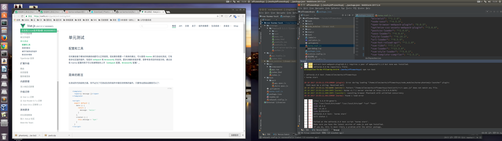

前端测试
测试
unit 单元测试
- karma 测试运行框架(运行在浏览器)
- mocha 测试框架 [其他测试框架jasmine 自带断言库]
- chai 断言库（expect风格，接近自然预言） [其他should.js]
e2e 端到端测试
- nightwatch
个人理解unit和e2e就是所谓的白盒测试和黑盒测试，
测试覆盖率
测试环境
- 浏览器下测试
- node环境下的测试
前端灰度发布
灰度无疑是你产品迭代中的一个保障
一般是后端先发布，前端后发布。
正式环境A,灰度环境B,(可通过query参数区分，如a.com?g=1);用户请求到达cdn， 再到nginx，选择部分用户302跳转到B的url,静态资源也应该有两个回源地址。分别是https://static.a.tv 的正式环境地址以及 https://static1.a.tv 的灰度地址，而B环境的静态资源需要加载灰度的静态资源回源地址（这部分可以在编译过程中根据自己需要处理）
回滚
vue 测试
vue 测试遇到的错误
- karma 运行错误

解决方案：
phantomjs 需要自己安装在电脑
- nightwatch 运行出错
解决方案： 这里有个评论中找到的答案
Error: [vuex] vuex requires a Promise polyfill in this browser.
vuex中使用axios,axios就是基于promise. ie下不支持promise
解决方案：
npm install --save-dev bable-polyfill"babel-polyfill": "^6.26.0",修改webpack配置
entry: { // 入口 // index: path.join(__dirname + '/../src/index.js') index: ["babel-polyfill", path.join(__dirname + '/../src/index.js')] // 解决IE不兼容【IE报vuex requires a Promise polyfill in this browser问题解决】 },
当我使用vue-cli init我的项目时，我遇到了同样的问题。在我更新到Java 9之后，这个问题解决了。